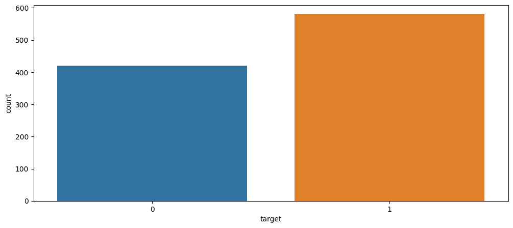
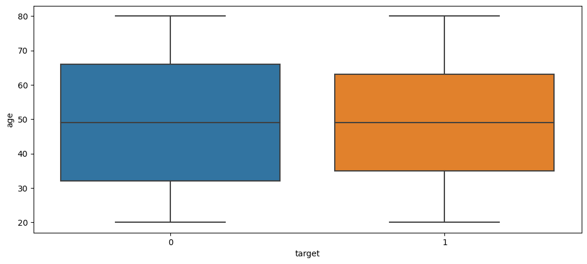
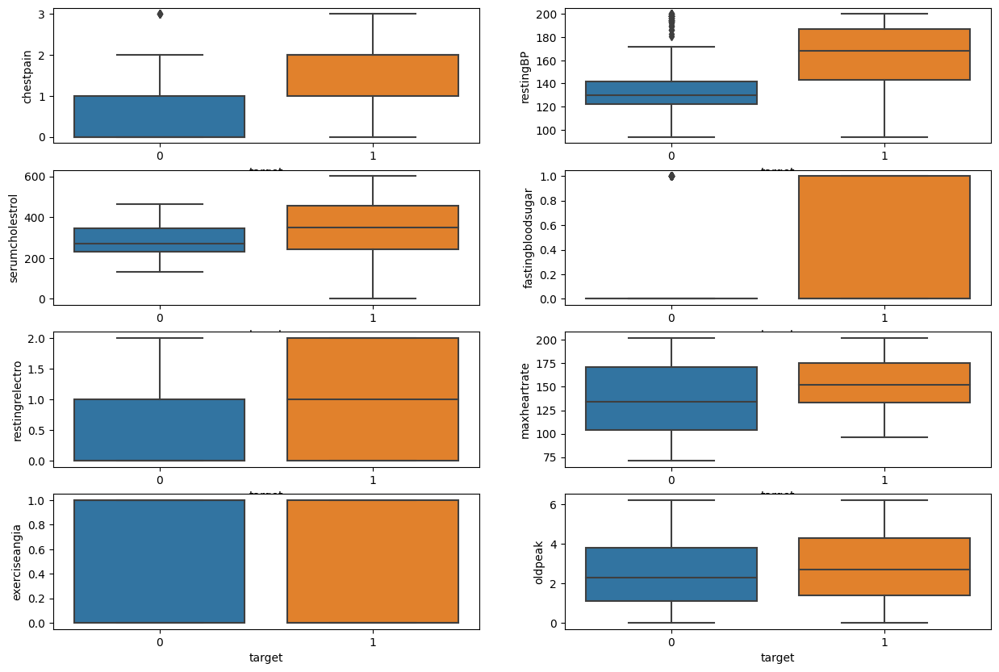
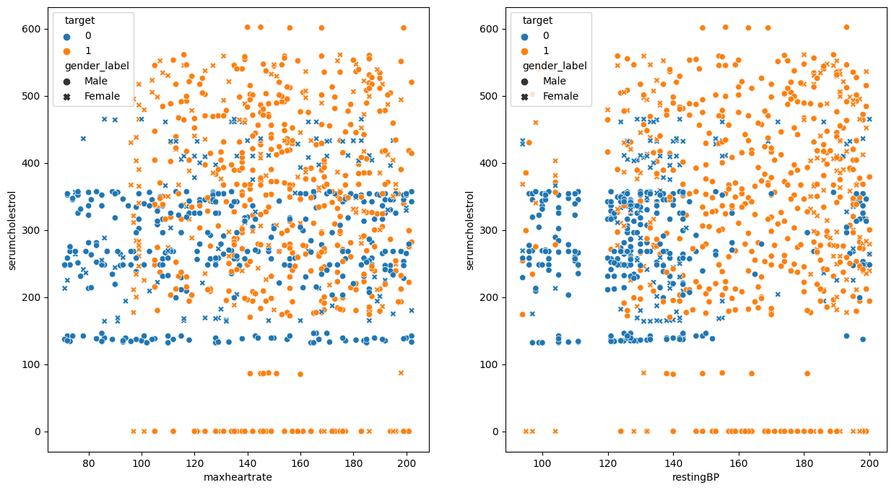
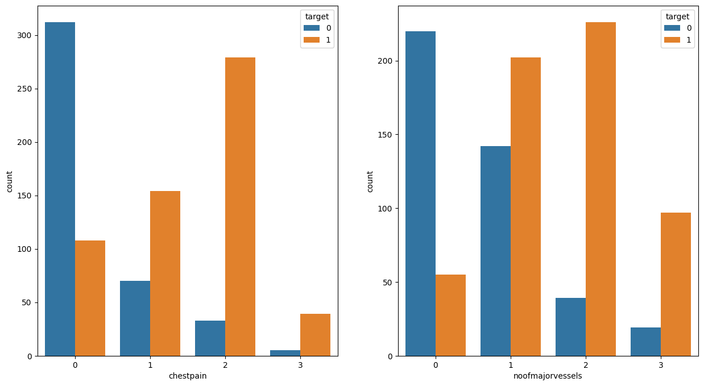
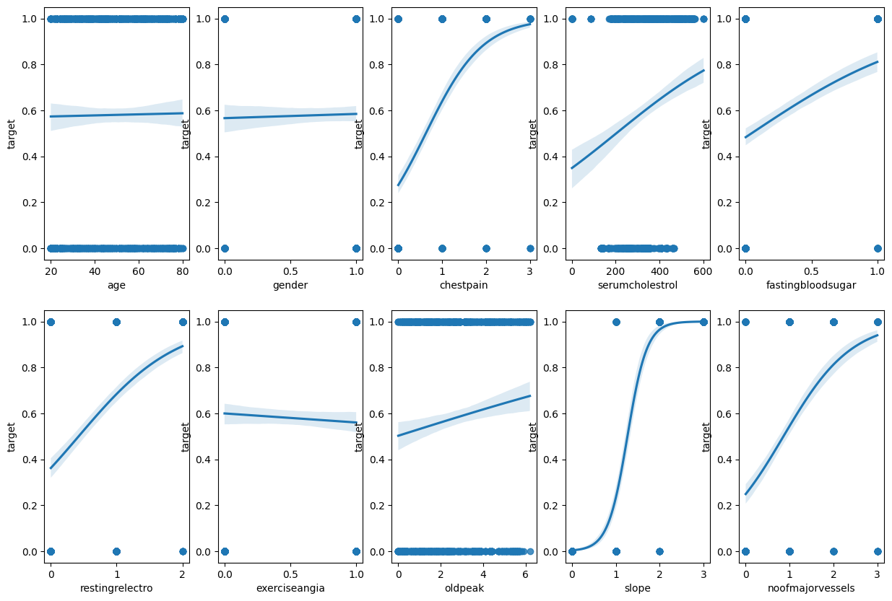
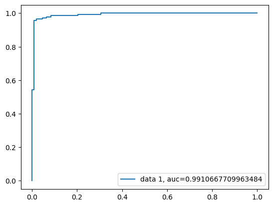
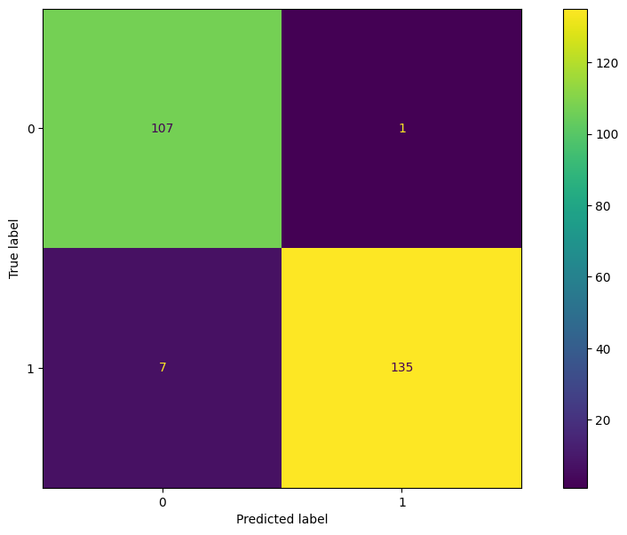

| patientid | age | gender | chestpain | restingBP | serumcholestrol | fastingbloodsugar | restingrelectro | maxheartrate | exerciseangia | oldpeak | slope | noofmajorvessels | target | |
|---|---|---|---|---|---|---|---|---|---|---|---|---|---|---|
| 0 | 103368 | 53 | 1 | 2 | 171 | 0 | 0 | 1 | 147 | 0 | 5.3 | 3 | 3 | 1 |
| 1 | 119250 | 40 | 1 | 0 | 94 | 229 | 0 | 1 | 115 | 0 | 3.7 | 1 | 1 | 0 |
| 2 | 119372 | 49 | 1 | 2 | 133 | 142 | 0 | 0 | 202 | 1 | 5.0 | 1 | 0 | 0 |
| 3 | 132514 | 43 | 1 | 0 | 138 | 295 | 1 | 1 | 153 | 0 | 3.2 | 2 | 2 | 1 |
| 4 | 146211 | 31 | 1 | 1 | 199 | 0 | 0 | 2 | 136 | 0 | 5.3 | 3 | 2 | 1 |
Abstract
Using data collected from hospitals in India, we demonstrate the usefulness of logistic regression in classifying patients with cardiovascular disease based on features collected by the hospital. We first present the classic approach to logistic regression (frequentist appraoch) followed by a demonstration of a bayesian approach to binary classification data. Our analysis shows that the given features and proposed inference approach prove viable and accurate methods in detecting cardiovascular disease in the sampled patients.
Data can be found here
Introduction
Tests are widely used in hospitals around the world to increase the effectiveness of preventitve care. Behind these tests are statistical methods that aid doctors and other healthcare professionals in properly administering care by correctly identifying health problems. In this analysis, we analyze a dataset collected from hospitals in India that were looking for ways to identify cardiovascular diseases in their patients. The goal is to provide the hospitals with 2 things: an accurate model that predicts the presence of cardiovascular disease, and a model that helps doctors know what symptoms to watch out for when helping patients, further alerting them to either receive a test for possible cardiovascular disease or dismiss those concerns.
Below is the first 5 rows of the dataset that we will be analyzing.
Of the 14 columns listed above, 1 is our target column (1 for disease and 0 for no disease), 12 features that we will use to gather inference on the target, and 1 column for patientids (unique key). Gender is encoded 1 for male and 0 for female. To ensure our analysis goes smoothly, we should validate that there are no null values. If there are any, we need to construct a strategy for conserving as much information as possible. Output for the number of null values for each column is found below.
patientid 0
age 0
gender 0
chestpain 0
restingBP 0
serumcholestrol 0
fastingbloodsugar 0
restingrelectro 0
maxheartrate 0
exerciseangia 0
oldpeak 0
slope 0
noofmajorvessels 0
target 0
dtype: int64The output shows that there are no null values for any of the columns in our dataset, so we can move onto the next step of data prep which is to verify the datatypes of each column. Essentially, we are verifying that all columns have data values that are to be expected (i.e. integers types for numeric columns). Output for this test is shown below.
patientid int64
age int64
gender int64
chestpain int64
restingBP int64
serumcholestrol int64
fastingbloodsugar int64
restingrelectro int64
maxheartrate int64
exerciseangia int64
oldpeak float64
slope int64
noofmajorvessels int64
target int64
dtype: objectThere doesn’t appear to be any unexpected datatypes in the dataset, so we can verify this step of data prep. More data prep can always be explored to ensure viable data for data analysis purposes, but for now we shall conclude these 2 steps are sufficient and proceed to our analysis of the data.
Exploratory Data Analysis
To begin our analysis, we will perform exploratory data analysis (EDA) to gather more information about how to best model our data. Below is a descriptive statistics table for our columns.
| patientid | age | gender | chestpain | restingBP | serumcholestrol | fastingbloodsugar | restingrelectro | maxheartrate | exerciseangia | oldpeak | slope | noofmajorvessels | target | |
|---|---|---|---|---|---|---|---|---|---|---|---|---|---|---|
| count | 1.000000e+03 | 1000.00000 | 1000.000000 | 1000.000000 | 1000.000000 | 1000.000000 | 1000.000000 | 1000.000000 | 1000.000000 | 1000.000000 | 1000.000000 | 1000.000000 | 1000.000000 | 1000.000000 |
| mean | 5.048704e+06 | 49.24200 | 0.765000 | 0.980000 | 151.747000 | 311.447000 | 0.296000 | 0.748000 | 145.477000 | 0.498000 | 2.707700 | 1.540000 | 1.222000 | 0.580000 |
| std | 2.895905e+06 | 17.86473 | 0.424211 | 0.953157 | 29.965228 | 132.443801 | 0.456719 | 0.770123 | 34.190268 | 0.500246 | 1.720753 | 1.003697 | 0.977585 | 0.493805 |
| min | 1.033680e+05 | 20.00000 | 0.000000 | 0.000000 | 94.000000 | 0.000000 | 0.000000 | 0.000000 | 71.000000 | 0.000000 | 0.000000 | 0.000000 | 0.000000 | 0.000000 |
| 25% | 2.536440e+06 | 34.00000 | 1.000000 | 0.000000 | 129.000000 | 235.750000 | 0.000000 | 0.000000 | 119.750000 | 0.000000 | 1.300000 | 1.000000 | 0.000000 | 0.000000 |
| 50% | 4.952508e+06 | 49.00000 | 1.000000 | 1.000000 | 147.000000 | 318.000000 | 0.000000 | 1.000000 | 146.000000 | 0.000000 | 2.400000 | 2.000000 | 1.000000 | 1.000000 |
| 75% | 7.681877e+06 | 64.25000 | 1.000000 | 2.000000 | 181.000000 | 404.250000 | 1.000000 | 1.000000 | 175.000000 | 1.000000 | 4.100000 | 2.000000 | 2.000000 | 1.000000 |
| max | 9.990855e+06 | 80.00000 | 1.000000 | 3.000000 | 200.000000 | 602.000000 | 1.000000 | 2.000000 | 202.000000 | 1.000000 | 6.200000 | 3.000000 | 3.000000 | 1.000000 |
Viewing the average for target, we get a value of .58, meaning a little more than half of our dataset contains presence of cardiovascular disease. Returning to the age column, we see that the average age is around 49 years, with the oldest being 80 and the youngest being 20. In addition, most of our dataset is compromised of males (about 77% of the dataset). Further domain knowledge is necessary to identify whether the other features respective statistics are “good” or “bad” values (healthy or not healthy).
While the tabular statistical information above is valiable, visual representations of the data are valiable to present so that we can quickly digest how our data looks. Below is a bar plot of the target values.

We can now visually see the imbalance of data in our dataset. There appears to be about 150 more 1s than 0s in the dataset. We will demonstrate later in the analysis how logistic regression is a good choice for handling unbalanced datasets. For now, we will continue to explore the dataset. While we clearly see above that there is a difference between the number of patients with and without heart disease, we should discover more information about who pertains to each target value. To do this, we can use a box-and-whisker plot to view the distribution of a variable separated by target value. Below is a box-and-whisker plot of the age distribution for 0 and 1 target values respectively.

The median for each respective target value appears to be 50, with a bit more variance for target value 0 than in target value 1, probably due to a smaller sample size. Nonetheless, we see that the age distribution for those who do not have and do have heart disease appear to be approximately the same.
To speed up the process of EDA, we can plot several box-and-whisker plots to view distribution of many variables split by target value. Figure 3.3 shows the distribution of other features in our dataset split by target value.

Viewing a grid of box-and-whisker plots allows us to quickly review the distributions for each target value for each feature specified. There appears to be a few features that have differing distributions, such as chestpain, restingBP, and fastingbloodsugar. Clearly delineated differences between target values will be useful for our logistic regression model in identifying patients with heart disease.
Using the information from Figure 3.3, we can create a scatterplot to explore more in-depth the relationship between these features with differing distributions. Below in Figure 3.4, we show a 1x2 grid scatterplot. The left hand panel is maxheartrate by serumcholestrol and the right hand panel is restingBP by serumcholestrol.

Looking at the left hand panel, we see that most of the 1 target values (heart disease) are either 0-100 or above 380ish. Most 0 values fall between 150-350ish on serumcholestrol. There does not appear to be any significant differenec between genders as they both appear to be intermixed fairly well. For the right hand panel, we see a more delineated difference for restingBP. There appears to be very few 0 values in the range of 140-200 restingBP. As well, Those above 140 restingBP and above 350 serumcholestrol appear to have a higher concentration of 1 target values. Additionally, there appears to be more males within the range of 140-180 restingBP who have target value of 1 whereas females who have a target value of 1 have a higher restingBP, more towards the range of 180-200 restingBP.
To explore the relationship of presence of heart disease and chestpain and noofmajorvessels, we can use countplots split by target value for each resepective level of chestpain and noofmajorvessels.

In the left hand panel of Figure 3.5, we see that as the level of chest pain increases, the proportion of those who have heart disease increase. Additionally, in the right hand panel, as we increase in noofmajorvessels, there is a greater proprotion of those who have heart disease.
Verify Model Assumptions
In order to properly model this data using logistic regression, we need to verify a few assumptions. First, we need to verify that our observations are independent of one another, that is that no observation mathematically influences any other observation. Thinking logically, we can verify this assumption that someone’s restingBP does not affect any other restingBP, and so forth for every feature found in the dataset. Therefore, we can model our dataset as shown in Equation 4.1.
\[ X_1, ... ,X_n \sim \text{ i.i.d. Bernoulli(p)} \tag{4.1}\]
The second assumption we should verify is that of multicollinearity. Multicollinearity occurs when features of a dataset are highly correlated with one another. This results in variance inflation which throws off the standard errors used in statistical modeling calculations. Below are the respective VIF scores for each feature in the dataset.
vif_factor features
0 7.407596 age
1 4.817933 gender
2 2.769973 chestpain
3 19.558195 restingBP
4 6.841284 serumcholestrol
5 1.631514 fastingbloodsugar
6 2.275207 restingrelectro
7 15.313735 maxheartrate
8 1.957391 exerciseangia
9 4.107705 oldpeak
10 6.588688 slope
11 3.622189 noofmajorvesselsA general rule of thumb is that VIF scores above 10 should be eliminated. Therefore, we will remove restingBP and maxheartrate from the dataset in order to verify the assumption of multicollinearity.
vif_factor features
0 5.686277 age
1 4.227614 gender
2 2.769430 chestpain
3 5.649147 serumcholestrol
4 1.629010 fastingbloodsugar
5 2.247908 restingrelectro
6 1.883431 exerciseangia
7 4.075928 oldpeak
8 6.053960 slope
9 3.597850 noofmajorvesselsAs we can see above in the new VIF scores, none of the scores are above 10 so we will accept these features as passed for the multicollinearity assumption.
The last assumption we will verify for our logistic regression model is the linearity assumption, or better said, the monotonicity assumption. We assume that each feature has a monotonic relationship with the target (response) variable. Below, we view this relationship in Figure 4.1

From Figure 4.1, we see that each plot demonstrates a monotonic-esque relationship. Therefore, we can verify the monotonicity assumption.
Model Creation
Using Equation 4.1, we can model our data using the logit function to create a linear relationship with the betas and features and the log-odds of the data. This relationship is shown in Equation 5.1.
\[ \text{log}(\frac{p(X)}{1-p(X)}) = \beta_0 + \beta_1x_1 ... + \beta_px_p \tag{5.1}\]
After fitting Equation 5.1 to our data, we obtain the below results.
Generalized Linear Model Regression Results
==============================================================================
Dep. Variable: target No. Observations: 750
Model: GLM Df Residuals: 739
Model Family: Binomial Df Model: 10
Link Function: Logit Scale: 1.0000
Method: IRLS Log-Likelihood: -78.442
Date: Fri, 12 Jan 2024 Deviance: 156.88
Time: 12:38:31 Pearson chi2: 349.
No. Iterations: 9 Pseudo R-squ. (CS): 0.6830
Covariance Type: nonrobust
=====================================================================================
coef std err z P>|z| [0.025 0.975]
-------------------------------------------------------------------------------------
const -10.4812 1.364 -7.682 0.000 -13.156 -7.807
age -0.0008 0.012 -0.066 0.947 -0.025 0.023
gender 2.4959 0.565 4.418 0.000 1.389 3.603
chestpain 1.2328 0.255 4.836 0.000 0.733 1.733
serumcholestrol 0.0012 0.002 0.696 0.487 -0.002 0.004
fastingbloodsugar 0.8571 0.506 1.695 0.090 -0.134 1.848
restingrelectro 1.2382 0.316 3.920 0.000 0.619 1.857
exerciseangia -0.3699 0.435 -0.849 0.396 -1.223 0.484
oldpeak -1.1640 0.208 -5.589 0.000 -1.572 -0.756
slope 7.1061 0.840 8.460 0.000 5.460 8.752
noofmajorvessels 0.1789 0.232 0.770 0.441 -0.276 0.634
=====================================================================================In the results above, of the features in the dataset fitted to the model, 5 of them are statistically significant (gender, chestpain, restingelectro, oldpeak, and slope). Of those 5 stat sig. features, only 1 of them has an average negative log-odds effect on classification of heart-disease (oldpeak).
While viewing these betas in their log-odds form is helpful to indicate whether a feature positively or negatively influence the classification of heart-disease, transforming these values into probabilities may be easier to interpret. Below, we transform the betas to probabilities.
const 0.000028
age 0.499799
gender 0.923852
chestpain 0.774311
serumcholestrol 0.500289
fastingbloodsugar 0.702057
restingrelectro 0.775258
exerciseangia 0.408566
oldpeak 0.237940
slope 0.999181
noofmajorvessels 0.544604
dtype: float64For example, on average, an increase of 1 in slope results in a .99 factor increase of having heart disease, holding all else constant. It appears that slope and gender have the highest probability factor increase in having heart disease. Let us use these factors to see what the model would predict for the following mock data set: male, age 25, no chest pain, 100 serum cholestrol, 0 fasting blood sugar, resting electro 0, exerciseangia 0, oldpeak 1, slope 0, and noofmajorvessels 0.
Log-odds: 0.000117
Odds-ratio: 1.000117
Probability: 0.500029The results above show that our model precicts, on average, that a person with the above characteristics would have an odds-ratio of about 1, or a probability of about 50% of having heart disease. Some may be confused by this result, as the above parameters show increases in probability that should result in a value closer than 1 for an additive model. However, one must remember that it is an additive model by logit (see Equation 5.1). To obtain probabilities, we have to inverse the logit function to isolate \(p(X)\), as shown in Equation 5.2.
\[ p(X) = \frac{e^{\beta_0 + \beta_1x_1 ... + \beta_px_p}}{1 + e^{\beta_0 + \beta_1x_1 ... + \beta_px_p}} \tag{5.2}\]
Model Assessment
As shown above, our logistic regression model now has predictive capabilties after being fit to the data. In order to gather a general idea of how well it does on testing data, we will perform a validation test set approach, where we withhold 25% of the data to be our test set and 75% of our data will be used as training data for the model. Afterwards, we can evaluate the predictive capability of our model by assessing its roc curve and auc score. These can be found in Figure 6.1

Our ROC curve in Figure 6.1 shows a nice elbow feature, indicating that our model performs very well at indicating true positives. In addition, our AUC score of .99 shows that our model performs very well at distinguishing between the true positives and false positives, meaning we have very good predictive performance in our logistic regression model. Using these metrics, we can find the optimal classification threshold that maximizes the true positive rate and minimizes that false positive rate. Below is our optimal threshold.
0.6519052347690012Our optimal threshold of approximately .65 indicates that we would classify anyone with a probability of heart disease above 65% as 1 (having heart disease) and anyone below 65% probability will be classified as 0 (no heart disease). We can use this value on our test set to create a confusion matrix and see the exact number of true positives and false positives. We can then utilize those numbers to calculate other metrics for model assessment such as sensitivity and specificity. The confusion matrix is found in Figure 6.2.

As we can see in the confusion matrix, our model does a great job at predicting true positives and true negatives. The model only mispredicted 1 true negative (generated 1 false negative) and mispredicted 7 true positives (generated 7 false positives). As mentioned above, we can use these numbers to view just how well our model does at identifying true positives and true negatives. Below are the metrics we calculated.
Accuracy: 0.968
Sensitivity: 0.9507
Specificity: 0.9907
PPV: 0.9926
NPV: 0.9386As shown above, even in our inbalanced data set, we achieved an accuracy of about 97%. Additionally, our sensitivity shows our model is very good at identifying true positives, scoring about 95%. Our specificity score was even better, scoring a 99%, meaning our model is almost perfect at identifying those who do not have the disease (true negatives). Positive predictive value and negative predictive value also prove to be very good, with 99% and 93% respectively. For PPV, this means the probability someone has the disease, given that they tested positive (classified as a 1), is 99%. For NPV, this means the probability someone doesn’t have the disease, given they tested negative (classified as a 0), is 93%.
This numbers, when we take into account our threshold value (.65), makes sense since we classify people with heart disease if and only if they are above 65% probability. Otherwise, they are classified as not having heart disease. For reference on how we calculated the above values, see Equation 6.1.
\[ Sensitivity = \frac{TP}{TP+FN} \]
\[ Specificity = \frac{TN}{TN+FP} \]
\[ PPV = \frac{TP}{TP+FP} \]
\[ NPV = \frac{TN}{TN+FN} \tag{6.1}\]